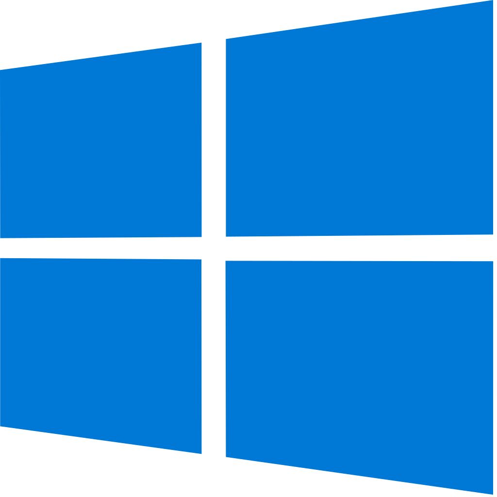
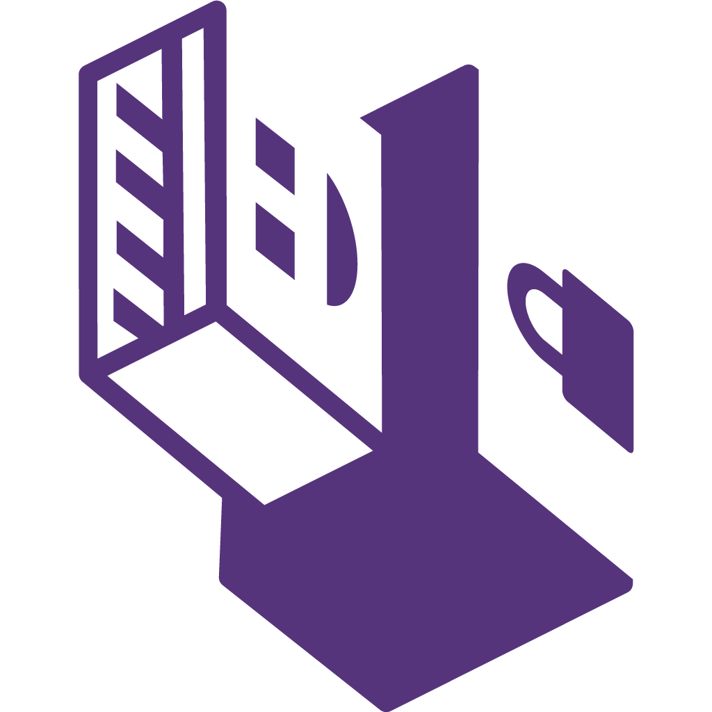

Windows 11 IoT
Enterprise 23H2
Windows 11 with minimal bloat.
Will be updated with LTSC.

Windows 10 IoT
Enterprise LTSC 2021
Windows 10 with minimal bloat.
Windows 7 Ultimate
Windows 7 with all features.
macOS 14 Sonoma
Apple's default operating
system for Mac computers.
Artix 2023-08-14
systemd-free Arch (openrc).
Refracta 12
Fork of Devuan, a systemd-free
Debian fork.
Gentoo 2023-04-17
Stage 3 tarball (openrc)
OpenBSD 7.4
BSD based Unix-like
operating system.
TempleOS
Operating system written in
HolyC.
FreeDOS 1.3
Open source DOS operating
system.

Tails 6
Amnesic live system.
QubesOS 4.2.1
Isolated activity Linux distribution.